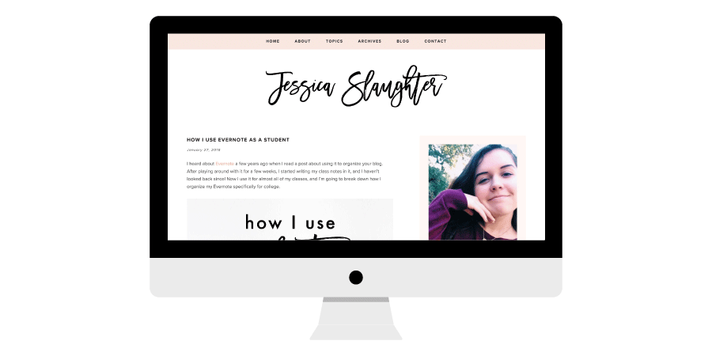

Projects

The Blogging Brew
I designed and developed this blog on WordPress using the Genesis Framework. Since I started blogging in June 2014, I've produced over 100 posts on blogging tips and tutorials meant to help others start and maintain a successful blog! I've garnered a loyal audience and become a member of the Clever Girls Network and the InfluenceHer Collective. Through these networks, I've had the opportunity to partner with major brands including Lenovo, Office Depot, and Dove.

JessicaSlaughter.co
After splitting my original blog in two, I created this blog in January 2016 as a more casual environment to share college and lifestyle tips! I've since garnered an audience of over 20,000 monthly views and joined networks including the InfluenceHer Collective and the Socialstars Network.